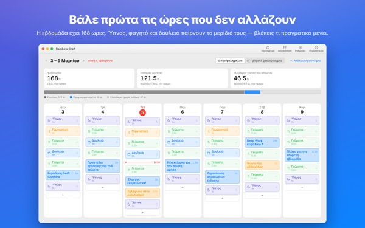
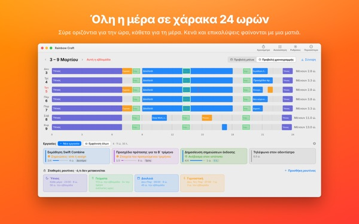
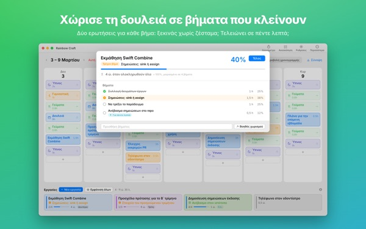
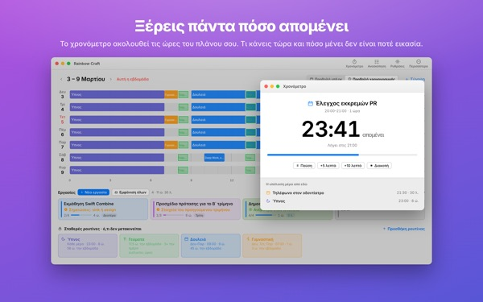
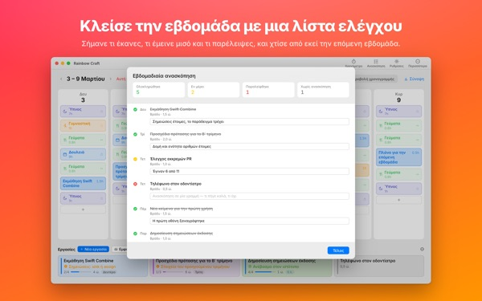

Χωράνε όντως όλα
αυτή την εβδομάδα;
Το Rainbow Craft απλώνει την εβδομάδα σου στο Mac ανά μέρα και ώρα. Ξεκίνα από τον χρόνο που δεν χαρίζεται, όπως ύπνο, γεύματα και δουλειά, σύρε τις εργασίες στα κενά που μένουν και δες τι χωράει στ’ αλήθεια.
Προγραμματισμός, ρουτίνες, εργασίες, ανασκόπηση, χρονόμετρο και εισαγωγή ημερολογίου είναι δωρεάν.

Οργάνωσε μια εβδομάδα εδώ
Βάλαμε τις τέσσερις ρουτίνες που προτείνει η εφαρμογή την πρώτη φορά που την ανοίγεις. Άναψέ τες, σβήσε τες και βάλε εργασίες στις μέρες.
Η λίστα μεγαλώνει. Η εβδομάδα όχι.
Μια λίστα εργασιών δεν σου λέει αν η εβδομάδα σου την αντέχει. Όταν ο ύπνος, το φαγητό και οι μετακινήσεις πάρουν το μερίδιό τους, μένει λιγότερος χρόνος απ’ όσο νομίζεις. Το Rainbow Craft δείχνει αυτές τις ώρες με αριθμούς και κουτάκια και σε αφήνει να δοκιμάσεις κάθε εργασία σε πραγματική θέση.
Μια μέρα πάνω σε χάρακα 24 ωρών
Η προβολή χρονογραμμής απλώνει τη μέρα σε χάρακα 24 ωρών. Τα κενά και οι επικαλύψεις φαίνονται αμέσως, κι εσύ διαλέγεις πώς θα μπουν όσα αλληλεπικαλύπτονται.
Φέρε συναντήσεις και ραντεβού από το Ημερολόγιο του Mac χωρίς να τα γράψεις δύο φορές. Αν θέλεις, τα πλάνα σου μπαίνουν και σε ξεχωριστό ημερολόγιο Rainbow Craft που βλέπεις στο iPhone. Τα άλλα σου ημερολόγια δεν αλλάζουν ποτέ.

Σπάσε τα μεγάλα σε βήματα που τελειώνουν
Οι μεγάλες δουλειές κολλάνε όταν κάτι ακόμη στέκεται εμπόδιο. Η εφαρμογή κάνει δύο ερωτήσεις για κάθε βήμα: μπορείς να ξεκινήσεις χωρίς προθέρμανση; Τελειώνει σε πέντε λεπτά;
Ό,τι περνά και τις δύο είναι ένα κομμάτι για κάθε ελεύθερο πεντάλεπτο. Τα υπόλοιπα θέλουν δεσμευμένο χρόνο. Αν η εφαρμογή κάνει λάθος, αποφασίζεις εσύ.

Τι κάνεις τώρα και πόσο μένει
Στην ώρα έναρξης το πλάνο γίνεται σε εξέλιξη, και όταν τελειώσει ο χρόνος η εφαρμογή ρωτά αν τελείωσες. Το χρονόμετρο ακολουθεί το πρόγραμμά σου.
Το widget Χρονόμετρο Τώρα δείχνει τι κάνεις και πόσος χρόνος μένει χωρίς να ανοίξεις την εφαρμογή.

Κλείσε την εβδομάδα με μια λίστα ελέγχου
Η εβδομαδιαία ανασκόπηση είναι μία κάρτα ανά μέρα. Σημείωσε τι έκανες, τι έκανες μισό και τι παρέλειψες, και χρησιμοποίησέ το για την επόμενη εβδομάδα.
Με τον ίδιο λογαριασμό iCloud οι εργασίες πηγαινοέρχονται ανάμεσα σε αυτή την εφαρμογή και το Rainbow of Desire στο iPhone, έτσι η μέρα που σχεδίασες στο Mac είναι μαζί σου έξω.

Ξεκινάς σε τρία βήματα
- 1
Όρισε τις σταθερές ώρες
Ό,τι επαναλαμβάνεται κάθε εβδομάδα, όπως ύπνος, γεύματα και δουλειά, γίνεται ρουτίνα. Η εφαρμογή δεν συμπληρώνει τίποτα για σένα.
- 2
Γράψε τις εργασίες σου
Μία ανά γραμμή στις Εργασίες, στο κάτω μέρος. Πότε θα τις κάνεις, δεν χρειάζεται να το ξέρεις ακόμη.
- 3
Σύρε τις στις μέρες
Αφημένη σε μια μέρα, γίνεται πλάνο. Άλλαξε η ημερομηνία; Σύρε την σε άλλη μέρα ή πίσω στη λίστα.
Ο λογαριασμός με τις προτεινόμενες ρουτίνες
- Μια εβδομάδα
- 168 ώρες
- Ύπνος · 8 ώρες τη μέρα
- 56 ώρες
- Γεύματα · τρία τη μέρα
- 17,5 ώρες
- Δουλειά · σχολή · 9 ώρες τις καθημερινές
- 45 ώρες
- Γυμναστική · 1 ώρα Δευ, Τετ, Παρ
- 3 ώρες
- Χρόνος που πραγματικά έχεις αυτή την εβδομάδα
- 46,5 ώρες
Είναι μόνο προτάσεις. Διάλεξε και προσάρμοσε τις ρουτίνες στη ζωή σου. Σε μέρα άδειας ή ταξιδιού, βγάλε τη δουλειά μόνο από εκείνη τη μέρα.
Ό,τι χρειάζεσαι για να ζήσεις αυτή την εβδομάδα είναι δωρεάν
Δωρεάν
- Πλάνα εβδομάδας και ημέρας, ρουτίνες και εργασίες χωρίς όριο
- Χρονογραμμή και χωρισμός σε βήματα
- Εβδομαδιαία ανασκόπηση, που αντιγράφεται και ως κείμενο
- Χρονόμετρο και widget Χρονόμετρο Τώρα
- Εισαγωγή ημερολογίου
- Συγχρονισμός με το Rainbow of Desire στο iPhone
- Τάσεις των τελευταίων 2 εβδομάδων
Plus · Pro
- Plus: τάσεις 8 εβδομάδων, οι καλύτερες μέρες και ώρες σου
- Plus: πλάνο και πραγματικότητα
- Plus: μετέφερε με μιας το πλάνο μιας καλής εβδομάδας σε αυτή
- Pro: όλα του Plus και κοινή χρήση του προγράμματος με σύνδεσμο μόνο για ανάγνωση
- Pro: μία αγορά ξεκλειδώνει το Pro και στην εφαρμογή του iPhone
Κάθε επίπεδο με ετήσια συνδρομή ή εφάπαξ αγορά για πάντα
Τις τιμές θα τις βρεις στην εφαρμογή και στο App Store. Η ετήσια συνδρομή ανανεώνεται αυτόματα, εκτός αν ακυρωθεί τουλάχιστον 24 ώρες πριν λήξει η περίοδος. Το Pro που αγόρασες στο iPhone ισχύει και σε Mac με τον ίδιο λογαριασμό iCloud.
Συχνές ερωτήσεις
Πρέπει να είμαι συνδεδεμένος στο iCloud;
Όχι, αν τη χρησιμοποιείς μόνο στο Mac. Χρειάζεται για συγχρονισμό με το iPhone και για κοινή χρήση του προγράμματος.
Αλλάζει η εφαρμογή τα ημερολόγιά μου;
Ποτέ όσα έχεις ήδη. Η εισαγωγή μόνο διαβάζει τα ημερολόγια που επιλέγεις. Αν ενεργοποιήσεις την εγγραφή πλάνων στο ημερολόγιο Rainbow Craft, η εφαρμογή φτιάχνει αυτό το ξεχωριστό ημερολόγιο και γράφει μόνο εκεί. Μπορείς να το διαγράψεις όποτε θέλεις από την εφαρμογή Ημερολόγιο.
Οι εργασίες από το Mac δεν εμφανίζονται στο iPhone.
Έλεγξε ότι και οι δύο συσκευές έχουν τον ίδιο λογαριασμό iCloud και ότι το Rainbow of Desire είναι εγκατεστημένο στο iPhone. Ο συγχρονισμός γίνεται μέσω iCloud και μπορεί να πάρει λίγα λεπτά.
Κλείνει η εφαρμογή όταν κλείνω το παράθυρο;
Όχι. Η εφαρμογή συνεχίζει να τρέχει. Ξανάνοιξε το παράθυρο από το μενού Παράθυρο ή κάνοντας κλικ στο εικονίδιο στο Dock.
Τι γίνεται με τις εργασίες και τα πλάνα μου σε μια ενημέρωση;
Μένουν ακριβώς όπως είναι. Οι ενημερώσεις δεν αλλάζουν ούτε σβήνουν όσα έγραψες.
Πώς αλλάζω τη γλώσσα της εφαρμογής;
Διάλεξέ τη στην κορυφή των Ρυθμίσεων, στο Language · 언어 · 語言, και η εφαρμογή ξανανοίγει σε αυτή τη γλώσσα. Υπάρχουν 23 γλώσσες. Ονόματα ρουτινών και εργασίες που έγραψες εσύ δεν μεταφράζονται.
Νέο Mac και χάθηκε το Plus ή το Pro.
Συνδέσου με τον ίδιο Λογαριασμό Apple και κάνε κλικ στην Επαναφορά αγοράς στις Ρυθμίσεις. Την ακύρωση την κάνεις από τις ρυθμίσεις λογαριασμού στο App Store.
Πού αποθηκεύεται ό,τι γράφω;
Χωρίς λογαριασμό, χωρίς εγγραφή και χωρίς διακομιστή του προγραμματιστή με τα πλάνα σου. Ό,τι γράφεις μένει στις συσκευές σου και στο δικό σου iCloud. Η εφαρμογή στέλνει ανώνυμα στατιστικά χρήσης χωρίς το περιεχόμενό σου, και τα απενεργοποιείς στις Ρυθμίσεις από την Αποστολή ανώνυμων στατιστικών χρήσης.
Κόλλησες ή κάτι δεν πάει καλά; Γράψε στο mizzking75@gmail.com. Θα βρεις επίσης επικοινωνία στις ρυθμίσεις της εφαρμογής.